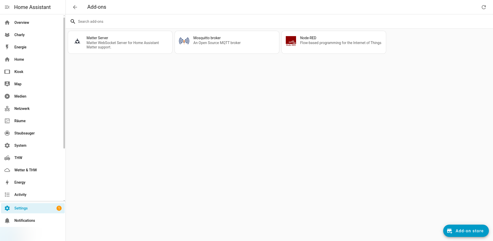

Node-RED
Node-RED ist ein flow-basiertes Automatisierungswerkzeug, das als HA-Addon installiert
ist. Im IceHomeAssist-System wird Node-RED primär für die Verarbeitung von WiFi-Button-Events
verwendet, da die dynamische Funktionszuweisung über input_select-Helpers
in Node-RED eleganter umsetzbar ist als in nativen HA-Automatisierungen.

Installierte Add-ons: Node-RED, Mosquitto und Matter Server
Addon-Konfiguration
Addon-Details
| Eigenschaft | Wert |
|---|---|
| Addon-ID | addon_a0d7b954_nodered |
| Web-Interface | http://homeassistant.local:1880 |
| Flows-Datei | /var/lib/homeassistant/addon_configs/a0d7b954_nodered/flows.json |
| MQTT-Verbindung | Verbindet sich mit dem Mosquitto-Addon auf localhost:1883 |
| HA-Verbindung | Über das Node-RED HA Companion Plugin (automatisch konfiguriert) |
packages/wifi_buttons.yaml
sind mit initial_state: false deaktiviert. Die eigentliche Button-Logik
wird vollständig über Node-RED-Flows gesteuert.
WiFi Buttons (ESP32-S3 Tasmota)
Die WiFi-Buttons basieren auf einem ESP32-S3 Mikrocontroller mit Tasmota-Firmware. Das Gerät hat sowohl physische GPIO-Buttons als auch einen RF-Empfänger für Funk-Fernbedienungen.
Hardware-Übersicht
| Button | Typ | Kennung | Beschreibung |
|---|---|---|---|
| Button 1 | Physisch (GPIO) | GPIO42 |
Erster physischer Taster am Gerät |
| Button 2 | Physisch (GPIO) | GPIO41 |
Zweiter physischer Taster am Gerät |
| Button 3 | Physisch (GPIO) | GPIO40 |
Dritter physischer Taster am Gerät |
| Button 4 | RF-Fernbedienung | 0xD26F68 |
Erster Funk-Button der Fernbedienung |
| Button 5 | RF-Fernbedienung | 0xDD21A8 |
Zweiter Funk-Button der Fernbedienung |
MQTT Topic
# MQTT Topic für Button-Events
stat/wifibutton1/RESULT
# Beispiel-Payload für physischen Button
{
"Button1": {
"Action": "SINGLE"
}
}
# Beispiel-Payload für RF-Button
{
"RfReceived": {
"Sync": 12350,
"Low": 420,
"High": 1210,
"Data": "0xD26F68",
"RfKey": "None"
}
}
# Mögliche Button-Actions
# Physische Buttons: SINGLE, DOUBLE, HOLD
# RF-Buttons: Nur SINGLE (über Data-Code identifiziert)input_select Helpers
Jeder WiFi-Button wird über einen input_select-Helper konfiguriert.
Dieser bestimmt, welche Aktion bei einem Tastendruck ausgeführt wird. Die Zuweisung
kann über das Dashboard geändert werden, ohne Code zu bearbeiten.
Konfiguration in packages/wifi_buttons.yaml
# packages/wifi_buttons.yaml - Input Select Helpers
input_select:
wifi_button1_action:
name: "WiFi Button 1 Aktion"
options:
- "Licht Toggle"
- "Musik Play/Pause"
- "Staubsauger Start"
- "Szene Abend"
- "Strompreis Ansage"
- "Nichts"
initial: "Licht Toggle"
icon: mdi:gesture-tap-button
wifi_button2_action:
name: "WiFi Button 2 Aktion"
options:
- "Licht Toggle"
- "Musik Play/Pause"
- "Staubsauger Start"
- "Szene Abend"
- "Strompreis Ansage"
- "Nichts"
initial: "Musik Play/Pause"
icon: mdi:gesture-tap-button
wifi_button3_action:
name: "WiFi Button 3 Aktion"
options:
- "Licht Toggle"
- "Musik Play/Pause"
- "Staubsauger Start"
- "Szene Abend"
- "Strompreis Ansage"
- "Nichts"
initial: "Staubsauger Start"
icon: mdi:gesture-tap-button
# Analog für Button 4 und 5 (RF)
wifi_button4_action:
name: "RF Button 4 Aktion"
options:
- "Licht Toggle"
- "Musik Play/Pause"
- "Szene Abend"
- "Nichts"
initial: "Szene Abend"
wifi_button5_action:
name: "RF Button 5 Aktion"
options:
- "Licht Toggle"
- "Musik Play/Pause"
- "Szene Abend"
- "Nichts"
initial: "Strompreis Ansage"Node-RED Flow-Struktur
Der Haupt-Flow für die WiFi-Buttons folgt einem konsistenten Muster:
Flow-Diagramm
flowchart LR
A["MQTT In
stat/wifibutton1/RESULT"] --> B["JSON Parse
Payload parsen"]
B --> C["Button-Identifikation
(welcher Button?)"]
C --> D["input_select Abfrage
(HA API)"]
D --> E["Switch-Node
Aktion auswählen basierend auf input_select"]
E --> F1["Licht Toggle
(HA Service)"]
E --> F2["Musik Play/Pause
(HA Service)"]
E --> F3["Staubsauger Start
(HA Service)"]
E --> F4["Szene Abend
(HA Service)"]
Flow-Beschreibung
-
MQTT In Node: Lauscht auf dem Topic
stat/wifibutton1/RESULTund empfängt alle Button-Events. - JSON Parse: Wandelt den MQTT-Payload-String in ein JSON-Objekt um.
-
Button-Identifikation: Ein Function-Node identifiziert, welcher
Button gedrückt wurde:
- Physische Buttons: Über
msg.payload.Button1,Button2,Button3 - RF-Buttons: Über
msg.payload.RfReceived.Data(0xD26F68 oder 0xDD21A8)
- Physische Buttons: Über
-
input_select Abfrage: Fragt über die HA-API den aktuellen Wert
des entsprechenden
input_select-Helpers ab. -
Switch-Node: Leitet die Nachricht basierend auf dem
input_select-Wert an den entsprechenden Aktions-Zweig weiter. -
Aktions-Nodes: Rufen den jeweiligen HA-Service auf
(z.B.
light.toggle,media_player.media_play_pause).
Beispiel: Function-Node (Button-Identifikation)
// Node-RED Function Node: Button identifizieren
const payload = msg.payload;
// Physische Buttons prüfen
if (payload.Button1) {
msg.button = 1;
msg.action = payload.Button1.Action;
} else if (payload.Button2) {
msg.button = 2;
msg.action = payload.Button2.Action;
} else if (payload.Button3) {
msg.button = 3;
msg.action = payload.Button3.Action;
}
// RF-Buttons prüfen
else if (payload.RfReceived) {
const rfData = payload.RfReceived.Data;
if (rfData === "0xD26F68") {
msg.button = 4;
msg.action = "SINGLE";
} else if (rfData === "0xDD21A8") {
msg.button = 5;
msg.action = "SINGLE";
}
}
// Nur bei SINGLE-Action weitermachen
if (msg.action === "SINGLE") {
return msg;
}
return null;Song-Info Flow (Hitster-Training)
Ein zweiter Flow erkennt automatisch Song-Wechsel auf allen drei Alexa-Geräten und ermittelt das Erscheinungsjahr über die MusicBrainz API. Das Ergebnis wird per MQTT publiziert und optional als Announce auf aktiven Alexas angezeigt.
Flow-Diagramm
┌──────────────┐ ┌───────────────┐ ┌────────────┐ ┌────────────────┐
│ State Changed│──▶│ Song-Wechsel │──▶│ Rate-Limit │──▶│ MusicBrainz │
│ (3 Alexas) │ │ pruefen & │ │ 1/s │ │ URL bauen │
│ Regex-Match │ │ parsen │ │ │ │ │
└──────────────┘ └───────────────┘ └────────────┘ └───────┬────────┘
│ │
┌──────▼──────┐ ┌───────▼────────┐
│ Debug: │ │ HTTP Request │
│ Song erkannt│ │ MusicBrainz API│
└─────────────┘ └───────┬────────┘
│
┌───────▼────────┐
│ Jahr │
│ extrahieren │
└──┬─────┬────┬─┘
│ │ │
┌─────────▼┐ ┌─▼────▼──────────┐
│ MQTT Out │ │ Announce-Targets │
│ song-info/│ │ bestimmen │
│ current │ │ (Toggle pruefen) │
└──────────┘ └────────┬─────────┘
│
┌───────▼────────┐
│ Alexa Announce │
│ (Text+Sprache) │
└────────────────┘Alexa Attribut-Mapping (TuneIn)
| Attribut | Inhalt | Beispiel |
|---|---|---|
media_title |
Artist: Titel | Rolling Stones: Angie |
media_artist |
Sendername | Bayern 1 |
media_album_name |
Senderbeschreibung | BAYERN 1 Die beste Musik für Bayern! |
Song-Filter
Die Function Node filtert Nicht-Songs heraus:
- Kein Doppelpunkt im
media_title→ kein Song-Format - E-Mail-Adressen, URLs, Telefonnummern (Regex-Filter)
- Sendernamen als Titel (Bayern 1, Klassik Radio, etc.)
- Artist == Title (Werbung/Jingles)
- Duplikate (pro Alexa getrennt via
flow.set)
nodered/flow-song-info.json importiert werden. Die Server- und
Broker-Referenzen müssen ggf. angepasst werden.
Matrix2-4 Präsenz-Abschaltung (SM301Z)
Ein Zigbee-PIR-Bewegungsmelder (Samotech SM301Z, meldet sich als generischer
Tuya-Klon _TZ3000_.../TS0202) schaltet die Matrix2-4-Displays im
Arbeitszimmer automatisch aus, wenn 15 Minuten lang keine Bewegung erkannt wurde
– und sofort wieder ein, sobald erneut Bewegung erkannt wird. Gepairt über
ZHA (Sonoff Zigbee 3.0 USB Dongle Plus, CC2652), IAS-Zone-Typ vom Gerät selbst
als Motion_Sensor bestätigt.
Flow-Diagramm
flowchart LR
A["HA State-Node
binary_sensor.az_sm301z_anwesenheit"] --> B{"Switch
on / off?"}
B -->|off| C["Trigger-Node
15min Timer, resettable"]
B -->|on| D["Change-Node
Payload = ON"]
B -->|on = Reset-Wert| C
C -->|Timeout ohne Reset| E["MQTT Out x3
cmnd/Matrix2-4/Power"]
D --> E
Flow-Beschreibung
-
HA State-Node: lauscht auf
binary_sensor.az_sm301z_anwesenheitund gibt bei jeder Statusänderung"on"/"off"als Payload aus (nur bei echter Änderung, nicht bei jedem Attribut-Update). - Switch-Node: verzweigt je nach Payload-Wert.
-
Trigger-Node (Kernlogik): startet bei
"off"einen 15-Minuten-Timer, der sich bei jedem weiteren"off"verlängert (extend). Trifft während der Wartezeit ein"on"ein (Reset-Wert), wird der Timer ohne Ausgabe verworfen. -
Change-Node: setzt bei
"on"sofortpayload = "ON"für das sofortige Wiedereinschalten. -
MQTT Out (x3):
cmnd/Matrix2/Power,cmnd/Matrix3/Power,cmnd/Matrix4/Power, jeweils mitretain=true.
"off", obwohl der Raum belegt ist. Für
echte Sitzplatz-Präsenzerkennung wäre ein mmWave-Radarsensor (z.B. Aqara
FP1, Sonoff SNZB-06P) die bessere Wahl, da dieser auch Mikrobewegungen wie Atmung
erkennt.
WZ Lichtleiste Nacht-Abschaltung (SNZB-06P)
Ein mmWave-Präsenzsensor (Sonoff SNZB-06P, ZHA) im Wohnzimmer erkennt, wann alle Bewohner ins Bett gegangen sind, und schaltet dann automatisch die WZ-Lichtleiste (Smart-Plug) aus. Die Lichtleiste wird auch manuell per Funk-Fernbedienung geschaltet – der Flow fragt deshalb immer den echten Live-Zustand des Geräts ab, statt einen eigenen Soll-Zustand zu führen.
Flow-Diagramm
flowchart LR
A["Tick
alle 60s"] --> B["Function-Node
Fensterprüfung + Ruhe-Timer"]
B -->|"Sunset+60min aktiv
UND 10min Ruhe"| C["Current-State-Node
Lichtleiste an?"]
B -->|"Fenster inaktiv
ODER Bewegung"| B
C -->|"ja"| D["Change-Node
Service-Call-Payload"]
C -->|"nein, schon aus"| B
D --> E["Call-Service-Node
switch.turn_off"]
Flow-Beschreibung
- Tick (60s): läuft durchgehend, nicht nur bei Sensor-Flanken – so öffnet das Zeitfenster auch zuverlässig, wenn der Präsenzsensor schon vor Fensterbeginn "keine Bewegung" meldet.
-
Function-Node (Kernlogik): liest Sonnenstand
(
sun.sun) und Präsenzsensor direkt aus dem Node-RED-internen HA-State-Cache. Das Zeitfenster ist aktiv ab Sonnenuntergang + 60 Minuten bis zum nächsten Sonnenaufgang. Innerhalb des Fensters läuft ein Ruhe-Timer in einer Flow-Variable, der bei Bewegung zurückgesetzt wird. - Current-State-Node: nach 10 Minuten durchgehender Ruhe wird der echte aktuelle Zustand der Lichtleiste abgefragt – nur bei "an" geht es weiter, ist sie schon aus, passiert nichts.
-
Change- + Call-Service-Node: setzen den Service-Call
(
switch.turn_off) als Payload und führen ihn aus.
GT-7000 Funksteckdosen-Replay (ESP8266 + SYN115 + RX470)
Ein ESP8266 lernt die Funkcodes einer handelsüblichen 433,92-MHz- Funksteckdose (Globaltronics/Quigg/Tevion GT-FSA-01, Fernbedienung GT-7000, u.a. bei Aldi verkauft) per RF-Empfänger mit und spielt sie per Sender-Modul wieder ab – dadurch lässt sich die Steckdose per MQTT (und darüber aus Node-RED) schalten, obwohl sie selbst keinerlei Netzwerkanbindung hat. Das Setup ist bewusst produktunabhängig beschrieben: dieselbe Vorgehensweise funktioniert für praktisch jede einfache 433-MHz-Funksteckdose oder -Klingel mit Festcode-Fernbedienung.
Hardware
| Bauteil | Rolle | Hinweis |
|---|---|---|
| ESP8266 (ESP-12F-Modul) | Steuerung, WLAN/MQTT | jedes ESP8266-Board geht, hier ein nacktes ESP-12F auf Breakout mit D-Pin-Beschriftung |
| SYN115 | 433,92-MHz-ASK/OOK-Sender | nur 1,8–3,6V! Niemals an 5V |
| RX470 (QIACHIP) | 433,92-MHz-ASK/OOK-Empfänger | 2,2–5V, hier mit 5V betrieben (bessere Empfindlichkeit) |
| LED + Vorwiderstand | optischer Empfangsmonitor | optional, aber sehr nützlich beim Debuggen (s.u.) |
| Draht ~17cm | Antenne (je Modul) | Quarterwave für 433,92MHz, ohne Antenne nur wenige cm Reichweite |
Verkabelung
Architektur
flowchart LR
subgraph Lernen["Code lernen (einmalig)"]
Fern["GT-7000
Fernbedienung"] -- 433,92MHz --> RX["RX470"]
RX -- GPIO14 --> ISR["Eigener Flanken-Interrupt
(kein RCSwitch)"]
ISR -- MQTT --> Analyse["Python-Auswertung
(Cluster + Sync-Marker-Suche)"]
end
subgraph Betrieb["Dauerbetrieb (Replay)"]
NR["Node-RED
Geraete-Steuerung"] -- "cmnd/gt7000fake/Power
ON / OFF" --> ESP["ESP8266"]
ESP -- GPIO4 --> TX["SYN115"]
TX -. 433,92MHz OOK .-> Dose["GT-FSA-01
Funksteckdose"]
ESP -- "stat/gt7000fake/POWER" --> NR
end
Analyse -.->|Codes fest einprogrammiert| ESP
Protokoll
Kein bei rtl_433/RCSwitch bekanntes Standardprotokoll (Sync/Präambel- Heuristik matcht nicht) – strukturell ähnlich zu PT2262-artigen Festcode-Encodern: ein kurzer Sync-Puls gefolgt von einer deutlich längeren Sync-Pause, danach ca. 19–20 Datenbits als abwechselnde kurze/lange Pegel-Dauern, mehrfach wiederholt pro Tastendruck.
| Parameter | Wert |
|---|---|
| Frequenz | 433,92 MHz (laut Original-Bedienungsanleitung) |
| Modulation | ASK/OOK |
| Wiederholungen je Tastendruck (Original) | mehrfach, ca. 4–6x |
| Sync-Marker | kurzer Puls (~700–900µs) + lange Pause (~3900–4750µs) |
| Datenbits | ~19–20 Bit, je Bit ein High/Low-Paar (~600–900µs / ~1250–1470µs) |
Mitgeschnittene Rohzeiten (µs zwischen Flankenwechseln, erste Wiederholung je Taste, Sync-Marker fett hervorgehoben):
// AN
765, 4747, 1385, 663, 715, 1334, 1383, 672, 1378, 671, 708, 1333, 719, 1327,
721, 1326, 724, 1350, 714, 1330, 749, 1294, 725, 1322, 729, 1311, 741, 1311, 728,
1318, 733, 1314, 1397, 681, 723, 1317, 731, 1323, 723, 1325, 1398, 600
// AUS
939, 3945, 1435, 613, 766, 1285, 1431, 620, 1427, 623, 750, 1300, 745, 1299,
751, 1296, 749, 1318, 761, 1286, 755, 1295, 752, 1295, 753, 1291, 758, 1286, 764,
1284, 752, 1296, 753, 1320, 756, 1290, 761, 1280, 769, 1280, 759, 1240Schritt für Schritt nachbauen
- Hardware verkabeln wie oben gezeigt (Antennen nicht vergessen, sonst nur wenige Zentimeter Reichweite).
-
Firmware-Grundgerüst flashen: ESP8266-Arduino-Core
+ Bibliothek
PubSubClient. WLAN- und MQTT-Zugangsdaten im Sketch eintragen (Broker-Adresse als RFC1918-IP, z.B.10.10.12.100, Port 1883). -
Eigenen Flanken-Interrupt statt RCSwitch verwenden:
attachInterrupt(pin, isr, CHANGE)zeichnet bei jeder Pegeländerung die Zeit seit der letzten Flanke auf (Ringpuffer). Ein Burst gilt als abgeschlossen, sobald ≥25ms Funkstille herrscht (lässt alle Wiederholungen eines Tastendrucks in einem zusammenhängenden Mitschnitt). RCSwitch selbst hat dieses Signal nie als gültiges Paket akzeptiert – vermutlich matcht die interne Sync-Heuristik der Bibliothek nicht jedes Protokoll. -
Rohdaten per MQTT statt Serial ausgeben: in dieser
Aufbau-Umgebung war die serielle Konsole unzuverlässig
(USB-Passthrough-Artefakte); MQTT-Publish war durchgehend stabil.
Achtung dabei:
PubSubClienthat standardmäßig nur 256 Byte Sendepuffer – für Rohdaten-Arrays reicht das nicht,mqtt.setBufferSize(2048)setzen, sonst schlägtpublish()still (ohne Fehlermeldung) fehl. - Je Taste isoliert mitschneiden: nur eine Taste mehrfach drücken, alle Mitschnitte per MQTT sammeln, dann in Python nach häufigstem, identischem Bitmuster clustern (kurze/lange Pegel-Paare in 0/1 umwandeln und zählen). Wiederholen für die zweite Taste.
- Sync-Marker prüfen: nicht jeder Mitschnitt mit "passendem" Bitmuster ist tatsächlich sauber – wird beim Zuschneiden der Rohdaten ein Wertebereich eingeschränkt (hier 400–1600µs), kann genau der deutlich längere Sync-Marker versehentlich abgeschnitten werden. Ergebnis: das Gerät sendet nachweislich (per SDR/Pulse-Analyzer verifizierbar), die Empfangsseite reagiert aber nicht, weil ihr der gültige Frame-Anfang fehlt. Gezielt einen Mitschnitt mit erkennbarem Sync-Marker (kurzer Puls + auffällig lange Pause direkt nach der führenden Stille) auswählen.
-
Replay-Funktion ergänzen: die rohen
Mikrosekunden-Werte werden 1:1 als alternierende High/Low-Sequenz
(
digitalWrite+delayMicroseconds) auf den TX-Pin geschrieben, mehrfach wiederholt. Da ein CHANGE-Interrupt keine absolute Phase kennt, ist der korrekte Startpegel (High- oder Low-zuerst) beim Mitschnitt nicht bekannt – pragmatische Lösung: bei jedem Kommando einfach beide Polaritäten nacheinander senden, eine trifft garantiert. -
MQTT-Kommando-Schnittstelle: Topic
cmnd/gt7000fake/Power(PayloadON/OFF) löst den Replay aus,stat/gt7000fake/POWERliefert einen Soft-State (kein echtes Feedback von der Funksteckdose möglich, rein unidirektionales Funkprotokoll).
loop() direkt den
rohen Pegel des RX-Pins (digitalWrite(LED_PIN, digitalRead(RX_PIN))).
Das liefert eine sofortige, von jeglicher Decode-Logik unabhängige
Sichtprüfung, ob am Empfänger überhaupt etwas ankommt –
ohne Log-Dateien auswerten zu müssen. War in diesem Projekt der
entscheidende Schritt, um Hardware-Probleme von Software-Problemen zu trennen.
Node-RED-Integration
flowchart LR
A["Inject-Node
GT-FSA-01 AN"] -->|"Payload: ON"| C["MQTT Out
cmnd/gt7000fake/Power"]
B["Inject-Node
GT-FSA-01 AUS"] -->|"Payload: OFF"| C
Zwei manuelle Inject-Buttons im Tab "Geräte-Steuerung", exakt
nach demselben Muster wie die bestehenden Tasmota-Toggle-Buttons
(fester String-Payload → MQTT-Out-Node), nur mit fixem
ON/OFF statt TOGGLE, da die
Funksteckdose keinen Rückmeldekanal hat.
Flows-Datei
Die Node-RED Flows werden in einer JSON-Datei gespeichert:
# Flows-Datei auf dem Host
/var/lib/homeassistant/addon_configs/a0d7b954_nodered/flows.json
# Backup der Flows erstellen
sudo cp /var/lib/homeassistant/addon_configs/a0d7b954_nodered/flows.json \
/var/lib/homeassistant/addon_configs/a0d7b954_nodered/flows.json.bakflows.json nicht manuell!
Verwende immer den Node-RED-Editor (http://homeassistant.local:1880).
Manuelle Änderungen können die Flow-Struktur beschädigen.
Warum Node-RED statt HA-Automatisierungen?
Für die WiFi-Buttons wird Node-RED statt nativer HA-Automatisierungen verwendet, weil:
- Dynamische Zuordnung: Die Funktion jedes Buttons kann über
input_selectim Dashboard geändert werden, ohne Automatisierungen zu bearbeiten - Komplexe Logik: Die Unterscheidung zwischen 5 verschiedenen Buttons (3 GPIO + 2 RF) mit jeweils mehreren Aktionsmöglichkeiten ist in Node-RED übersichtlicher als in YAML
- Visueller Editor: Flows können grafisch erstellt und debuggt werden – ideal für Event-basierte Logik
- MQTT-Integration: Node-RED hat exzellente MQTT-Unterstützung mit JSON-Parsing direkt im Flow
Die HA-Automatisierungen in packages/wifi_buttons.yaml sind daher mit
initial_state: false deaktiviert und dienen nur als Dokumentation
der verfügbaren Aktionen.
Tasmota-Konfiguration (ESP32-S3)
# Tasmota Template für ESP32-S3 WiFi Buttons
# Konsole: http://<esp32-ip>
# GPIO-Zuordnung konfigurieren
Template {"NAME":"WiFiButton1","GPIO":[0,0,0,0,0,0,0,0,0,0,0,0,0,0,0,0,0,0,0,0,0,0,0,0,0,0,0,0,0,0,0,0,0,0,0,0],"FLAG":0,"BASE":1}
# Button-GPIOs setzen
GPIO42 Button1 # Physischer Button 1
GPIO41 Button2 # Physischer Button 2
GPIO40 Button3 # Physischer Button 3
# MQTT-Einstellungen
MqttHost 192.168.1.100 # IP des NUC (Mosquitto)
MqttPort 1883
MqttUser mqtt_user
Topic wifibutton1
# Button-Modus: Nur MQTT-Events senden (kein lokaler Toggle)
SetOption73 1 # Buttons senden MQTT statt lokaler Aktion
SetOption13 1 # Button-Single-Press-ModusRfReceived-Events über MQTT gesendet.
Es ist keine zusätzliche Konfiguration des RF-Empfängers erforderlich, sofern der
RF-GPIO in Tasmota korrekt zugewiesen ist.